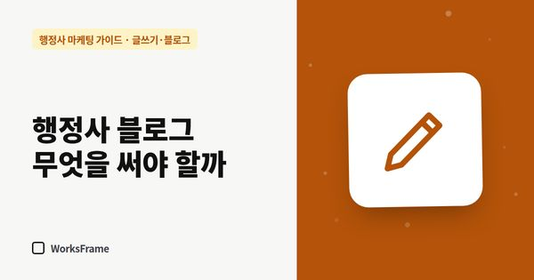
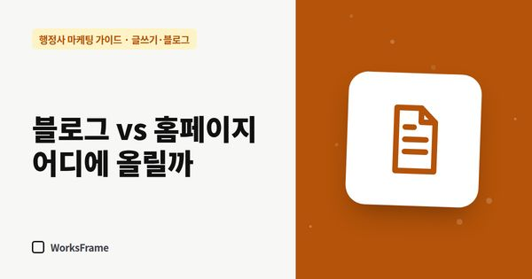
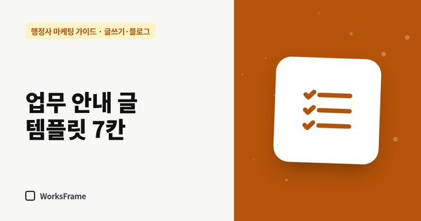
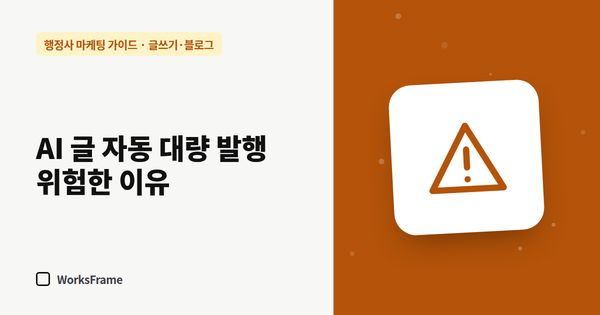
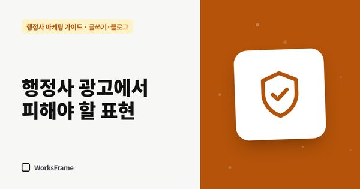

글쓰기·블로그

글쓰기·블로그 행정사 블로그, 무엇을 써야 문의가 올까 — 글 유형 5가지 행정사 블로그에 일상이나 합격 후기만 쓰면 문의로 이어지기 어렵습니다. 고객이 검색하는 질문에 답하는 글, 준비서류 정리, 기한 안내 등 문의로 이어지는 글 유형 5가지를 정리했습니다.
글쓰기·블로그 행정사 글, 네이버 블로그와 홈페이지 중 어디에 올릴까 같은 업무 안내 글이라도 네이버 블로그와 홈페이지에서 하는 역할이 다릅니다. 두 곳의 장단점, 글을 나눠 올리는 기준, 같은 글을 그대로 복사하면 안 되는 이유를 정리했습니다.
글쓰기·블로그 행정사 업무 안내 글 템플릿 — 그대로 채우면 되는 7칸 행정사 업무 안내 글을 매번 처음부터 쓰면 오래 걸립니다. 대상, 요건, 준비서류, 절차, 기간, 비용, 자주 묻는 질문 7칸을 채우면 되는 템플릿과 작성 예시를 정리했습니다. 글쓰기·블로그
상담에서 받은 질문으로 행정사 글감 50개 만들기
글감이 떨어지는 가장 큰 이유는 기록을 하지 않기 때문입니다. 상담 전화와 카톡에서 받은 질문을 모아 업무별 글감 목록으로 바꾸는 방법과 우선순위 정하는 법을 정리했습니다.
글쓰기·블로그
상담에서 받은 질문으로 행정사 글감 50개 만들기
글감이 떨어지는 가장 큰 이유는 기록을 하지 않기 때문입니다. 상담 전화와 카톡에서 받은 질문을 모아 업무별 글감 목록으로 바꾸는 방법과 우선순위 정하는 법을 정리했습니다.
 글쓰기·블로그
ChatGPT로 행정사 글 초안 쓰기 — 프롬프트와 검수 체크리스트
ChatGPT 같은 AI로 업무 안내 글 초안을 빠르게 만들 수 있지만, 그대로 올리면 틀린 정보와 과장이 섞일 수 있습니다. 행정사 글에 맞는 프롬프트 예시와 게시 전 검수 체크리스트를 정리했습니다.
글쓰기·블로그
ChatGPT로 행정사 글 초안 쓰기 — 프롬프트와 검수 체크리스트
ChatGPT 같은 AI로 업무 안내 글 초안을 빠르게 만들 수 있지만, 그대로 올리면 틀린 정보와 과장이 섞일 수 있습니다. 행정사 글에 맞는 프롬프트 예시와 게시 전 검수 체크리스트를 정리했습니다.

글쓰기·블로그 AI 글 자동 대량 발행, 행정사 사이트엔 위험한 이유 하루 수십 편씩 AI 글을 자동으로 올려 주는 서비스가 많습니다. 구글의 대량 생성 콘텐츠 정책과 2026년 3월 업데이트 이후 사례를 바탕으로, 행정사 사이트에서 자동 대량 발행이 위험한 이유와 대안을 정리했습니다.
글쓰기·블로그 행정사 광고·글에서 피해야 할 표현 — 보장, 승소율, 법률상담 행정사 홈페이지와 블로그에 “100% 허가”, “승소율 99%”, “법률상담” 같은 표현을 쓰면 광고 규정이나 업무 범위 문제가 생길 수 있습니다. 피해야 할 표현과 바꿔 쓸 문장을 정리했습니다. 글쓰기·블로그 처리 사례 글 쓰는 법 — 개인정보는 지우고 신뢰는 남기기 행정사 사무소의 처리 사례는 가장 설득력 있는 글이지만 고객 정보가 드러나기 쉽습니다. 동의 받기, 알아볼 수 있는 정보 지우기, 결과를 과장하지 않고 과정을 보여 주는 사례 글 구성법을 정리했습니다. 글쓰기·블로그 행정사 블로그, 얼마나 자주 써야 할까 — 현실적인 발행 주기 매일 써야 한다는 말에 시작했다가 한 달 만에 멈추는 경우가 많습니다. 1인 행정사 사무소가 지킬 수 있는 발행 주기, 주간 루틴, 오래된 글을 고쳐 쓰는 법을 정리했습니다.